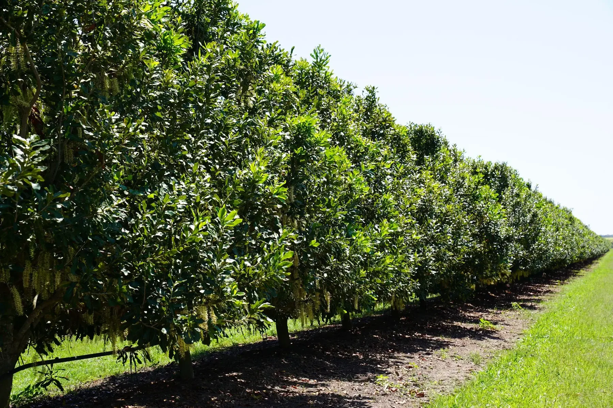

Choose the right test for your crop.
A test result needs to be read alongside what is happening in the paddock or block. We help you choose the test, understand the result and use it to guide nutrition decisions.
Different tests answer different questions.
Tell us what you need to understand about your crop. If you are unsure which test to request, the team can help you choose.
What does the soil test show?
Assess soil conditions and Nutrient levels in the paddock, block or zone being sampled.
Explore soil testing 02Leaf and tissueWhat reached the plant?
Interpret the sample with its tissue type, crop stage and recent growing conditions.
Explore leaf and tissue testing 03Differential sapHow do young and old tissue compare?
Compare young and old tissue sampled together, and follow changes through repeat tests.
Explore differential sap analysis 04WaterIs the water suitable for its intended use?
Read water quality against its use in sprays, irrigation and fertigation.
Explore water testing 05ProduceWhat left with the harvested crop?
Assess crop composition and Nutrient removals alongside harvest volume and quality records.
Explore produce testingPosition. Pattern. Plan.
Whichever test you need, we consider the current results and crop history before discussing a recommendation.
Where are you now?
Review the test result alongside crop stage, paddock or block details and other available reports.
How did you get here?
Compare previous tests with seasonal conditions, inputs and crop response to understand what has changed.
What should happen next?
Discuss what to do next and whether further observations or testing would help.

From your request to the next recommendation.
The team confirms the test and sampling instructions with you, then discusses what the results mean for your crop.
- 1We review your request
A Hybrid-Ag team member reviews your crop details and what you need the test to help you decide.
- 2We confirm the test
The team discusses sampling, reports already available and how any files should be shared.
- 3We explain the results
We explain the results alongside crop stage, paddock or block conditions and other relevant reports.
- 4We discuss the next step
Agree on the next step and any follow-up testing needed.
Your reports do not need to come from us.
If you already have soil, plant, water or production results, tell us what you have. The team will confirm which reports are useful for a Nutrient Audit and how to share them.